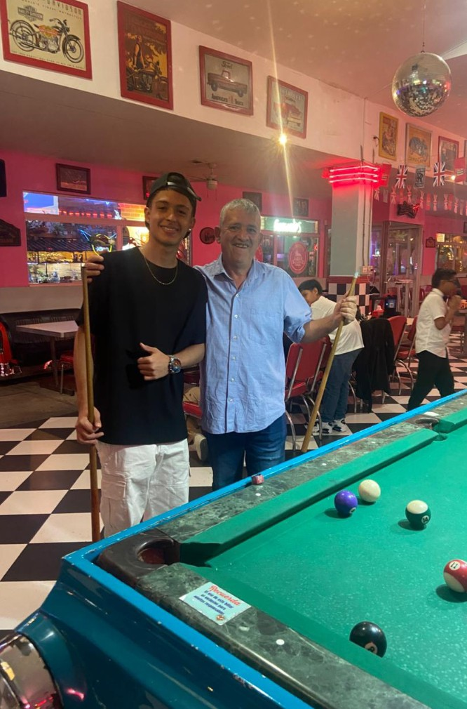
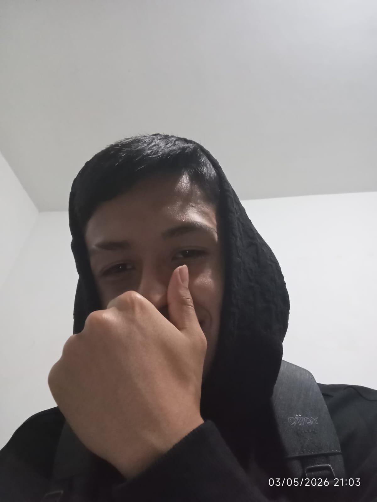

⚽
Futbol
Me gusta mucho el futbol porque es un deporte divertido qe me permite compartir con muchas personas, mantenerme activo y disfrutar de mi pasion por el deporte.

Hola mi nombre es Juan Sebastian Giraldo y les voy a contar un poco de lo que hago en mi vida aparte de la programacion.
Me gusta mucho el futbol porque es un deporte divertido qe me permite compartir con muchas personas, mantenerme activo y disfrutar de mi pasion por el deporte.
Uno de mis deportes favoritos es el tenis de mesa porque es muy entretenido, aparte de eso requiere mucha concentracion, rapidez y buenos reflejos.

Me llaman mucho mucho la atenion los carros mas que todo por sus diseños, velocidad y la variedad de modelos que existen.

Son una de mis formas favoritas de entretenerme en mi tiempoo libre, me gustan juegos como call of duty, god of war, GTA, etc.

Probar diferentes platos es una de las cosas que mas disfruto, me gusta descubrir nuevos sabores y compartir comidas especiales con las personas cercanas a mi.

Siempre hay una canción para escuchar en cada mnomento, escuchar música me ayuda a relajarme, subir mi ánimo y disfrutar de diferentes ritmos, especialmente regueton y la salsa.


